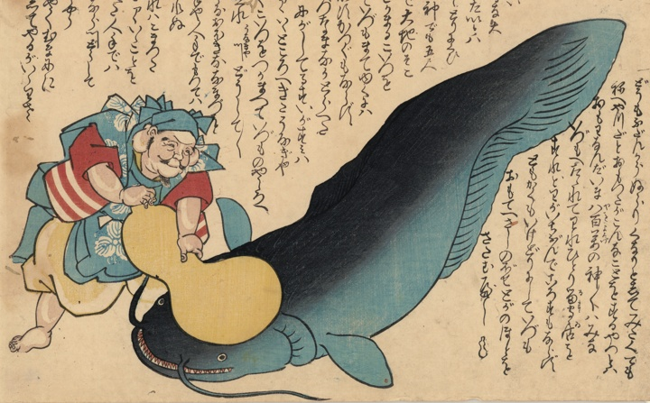

← 图鉴索引

恵比寿に瓢箪で押さえられた鯰。
著作者：不明／出典：親書誌：U426_nichibunken_0465：[鯰を押える恵比須]；ナマズオオサエルエビス／日付：2025／資源識別子：U426_nichibunken_0465_0001_0000
Copyright (c)2010- International Research Center for Japanese Studies, Kyoto, Japan. All rights reserved.